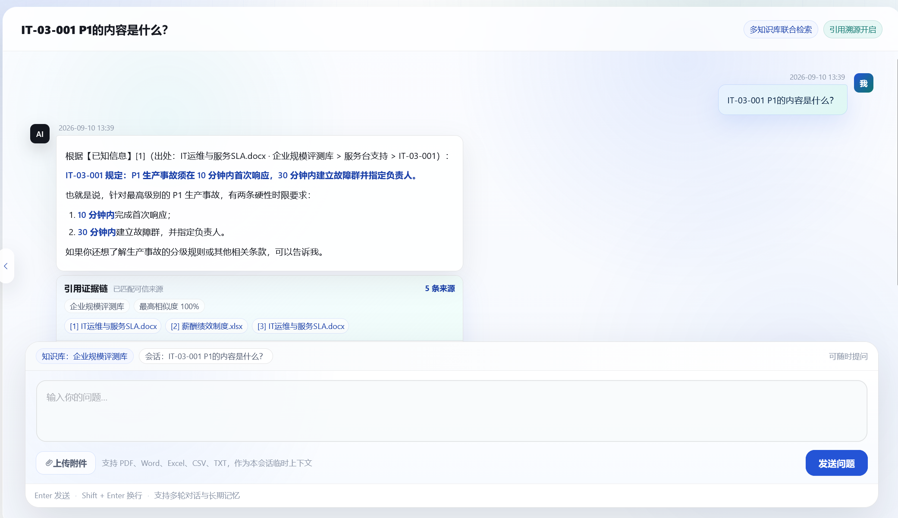
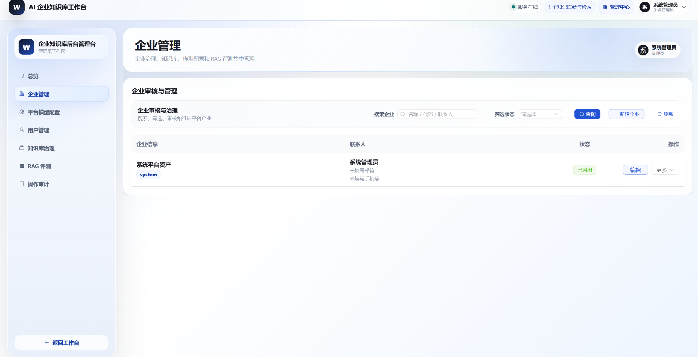
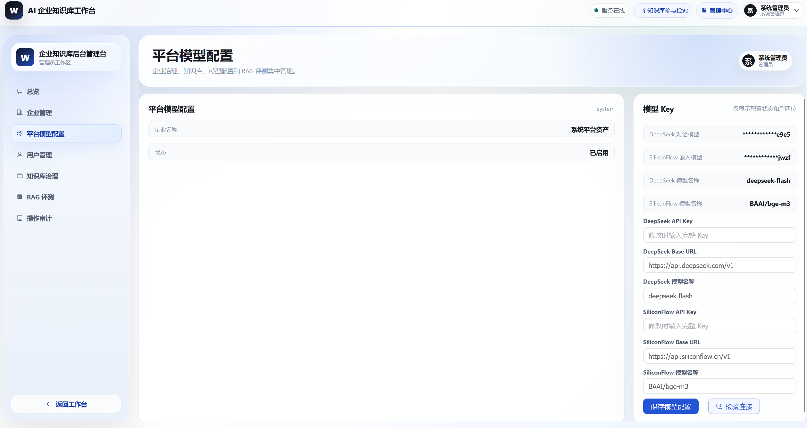
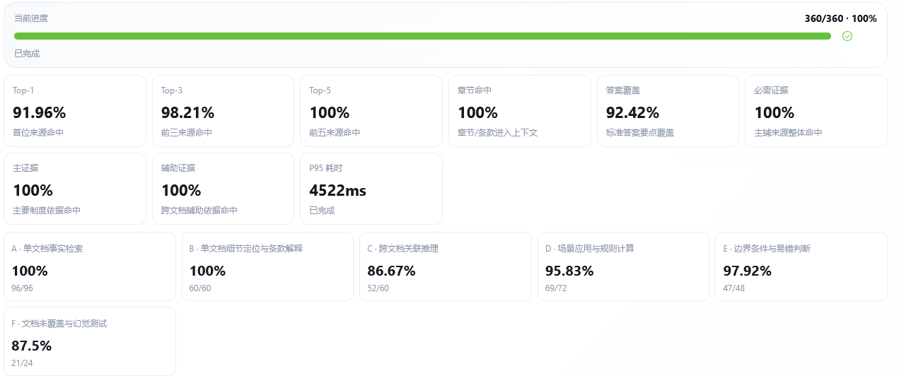
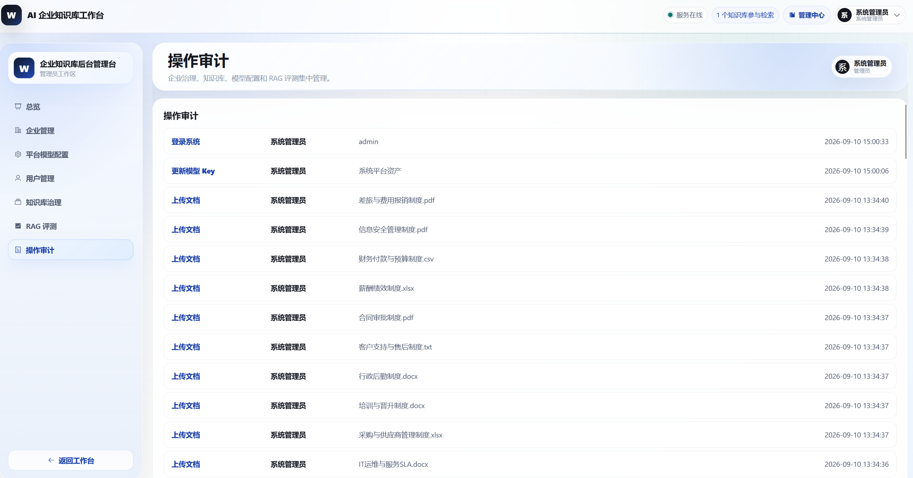

企
多企业 SaaS 与账号体系支持 system 平台资产、企业管理员注册审核、企业员工后台创建。企业代码作为登录入口，同名用户名可在不同企业内独立存在。
- 系统管理员：企业 CRUD、审核、禁用、代管
- 企业管理员：员工、知识库、模型 Key、评测
- 企业员工：本企业知识库问答和个人会话
平台围绕三类用户展开：系统管理员治理平台，企业管理员管理企业资产，企业员工使用知识库问答。每个模块都服务于“可上传、可检索、可追溯、可评测、可隔离”的企业场景。
支持 system 平台资产、企业管理员注册审核、企业员工后台创建。企业代码作为登录入口，同名用户名可在不同企业内独立存在。
企业管理员可新建知识库、上传制度文档、查看解析状态、失败原因、切片数量，并在删除时同步清理关系库记录和向量。
员工可选择一个或多个知识库参与检索。回答区展示正文、引用证据链、来源文件、相似度和片段摘要，方便检查答案依据。
用户提问时上传附件后，附件只属于当前企业、当前账号、当前会话。后续追问可继续使用附件内容，但不会自动进入企业正式知识库。
系统内置企业规模基准评测集，支持 retrieval 和 full 两种模式，输出逐题诊断、失败原因、报告下载和历史任务。
DeepSeek 对话模型和 SiliconFlow/BGE-M3 嵌入模型按企业配置。Key 加密存储、遮罩展示、连接测试，关键治理动作写入审计日志。
通过真实系统界面展示核心流程：登录进入工作台，选择知识库提问，查看引用证据，再进入后台完成文档、模型、企业和评测治理。
登录页使用企业代码、用户名、密码和验证码进入系统。系统管理员使用 `system` 入口，企业用户使用企业代码入口。企业管理员可提交注册申请，审核通过后获得企业后台权限。
首页把知识库选择、最近会话、问答输入和引用开关集中在一个操作界面。用户可以在多知识库范围内提问，也可以进入后台查看文档和评测。

回答不仅给出结论，还将可用证据组织成引用链。用户可检查命中的知识库、文件名、章节路径、片段内容和相似度，判断答案是否可靠。
后台以知识库为单位管理文档生命周期。管理员可查看每个文件的解析状态、切片数量、失败原因，支持单文件删除和批量删除。

企业管理支持新建、查看、编辑、审核通过、拒绝、启用、禁用和软删除。企业代码唯一，system 平台资产不可删除，所有治理动作进入审计。

每个企业单独保存对话模型和嵌入模型配置。保存与连接测试分开，连接测试使用当前输入优先，不自动写入数据库。

评测中心用于验证检索命中、章节命中、答案覆盖、引用正确、拒答正确和耗时。任务中断后可提示重新评测，历史任务和报告按企业隔离。

审计中心记录企业审核、企业状态变更、模型 Key 更新、文档删除、评测删除、代管企业等关键操作，方便平台治理和问题追踪。
展示系统时可以按这条路径讲解：从企业入口登录，到上传资料，再到问答验证、评测诊断和平台治理。
企业代码 + 用户名 + 密码进入企业工作台。
企业管理员保存并测试 DeepSeek / SiliconFlow Key。
制度、表格、PDF 解析为结构化切片并写入向量库。
员工获得带证据链、来源文件和引用编号的回答。
运行基准题集或审核后的题集，输出诊断报告。
企业制度问答不是普通闲聊，问题里经常包含条款号、文件名、金额阈值、时间限制、审批角色和跨文档条件。系统把准确率工程拆成“结构化入库、查询理解、多路召回、重排补证、受控生成、评测闭环”六层，让答案尽量来自可追溯证据，而不是依赖模型猜测。
系统支持 DOCX、PDF、扫描 PDF OCR、TXT、CSV、XLSX/XLS。表格不会被压成一团文本，而是转换为包含 Sheet、表头、行号、字段和值的可检索文本。
Word 按段落、标题和条款组织；PDF 优先读取文本层，扫描件走 OCR 兜底；Excel/CSV 会把 Sheet、表头、行号和字段值展开成自然语言，避免表格关系在向量化前丢失。
默认 350 字符切片、80 字符重叠，适合企业制度中“一条规则 + 条件 + 例外”的长度。每个 chunk 写入文档名、章节、条款号、页码/Sheet、enterprise_id、kb_id、doc_id 和 chunk_id。
向量检索处理语义相近问题，BM25 处理制度编号和关键词，条款号精确召回处理 HR-01-001 这类短编号，元数据过滤保证只在当前企业和选中的知识库内检索。
候选结果先融合去重，再通过 Rerank 把最相关证据前置。跨文档问题会补召回主证据和辅助证据，避免只命中其中一个制度导致答案要点缺失。
Prompt 要求按引用编号作答，证据不足时明确说明知识库无依据；正式知识库和会话附件分开注入，附件与制度冲突时并列说明差异，不直接合并成确定结论。
评测中心同时看 Top-K 文档命中、章节命中、答案要点覆盖、必需证据命中、引用正确和拒答正确，定位问题属于召回、重排、生成还是拒答策略。
所有业务实体围绕 `enterprise_id` 归属，个人会话围绕 `user_id` 再隔离。Zilliz 使用统一 collection，但检索和删除必须同时带企业、知识库、文档元数据过滤，避免跨企业命中和残留向量污染。
| 数据域 | 核心表 | 隔离与约束 |
|---|---|---|
| 企业与用户 | enterprise、users、enterprise_model_key | 企业状态流转；用户名企业内唯一；模型 Key 加密保存并遮罩展示。 |
| 知识库与文档 | knowledge_base、document | 知识库企业内唯一；文档记录 enterprise_id、kb_id、解析状态、切片数。 |
| 会话与附件 | conversation、message、conversation_attachment、conversation_attachment_chunk | 按 enterprise_id + user_id + conversation_id 隔离，附件只在当前会话内参与 RAG。 |
| 评测与审计 | evaluation_dataset、evaluation_run、evaluation_case_result、audit_logs | 题集、任务、报告和审计按企业过滤；system 管理平台资产。 |
这里集中展示系统架构、RAG 链路、数据库关系、权限模型和评测流程。图表使用可维护的 SVG 绘制，方便后续随代码演进继续更新。


系统内置企业规模基准题集，用于持续观察 RAG 在不同题型上的表现。AI 辅助生成题集被定位为草稿题集，需要人工审核后才进入辅助评测。
README 给出项目总览；更深入的工程细节拆分到 docs 中，便于按主题阅读。
从用户登录、知识库治理、模型配置，到可信问答、会话附件和 RAG 评测，系统能力已经串成一套可运行工作台。